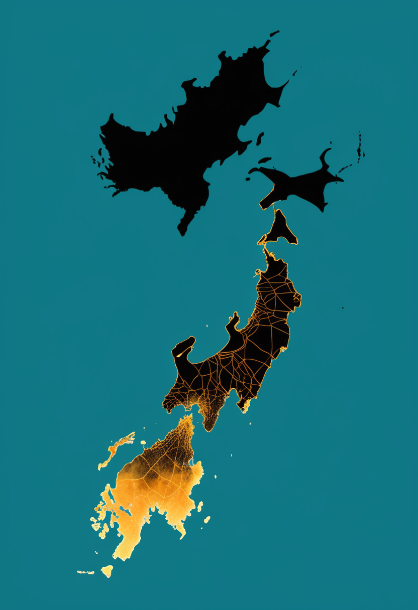
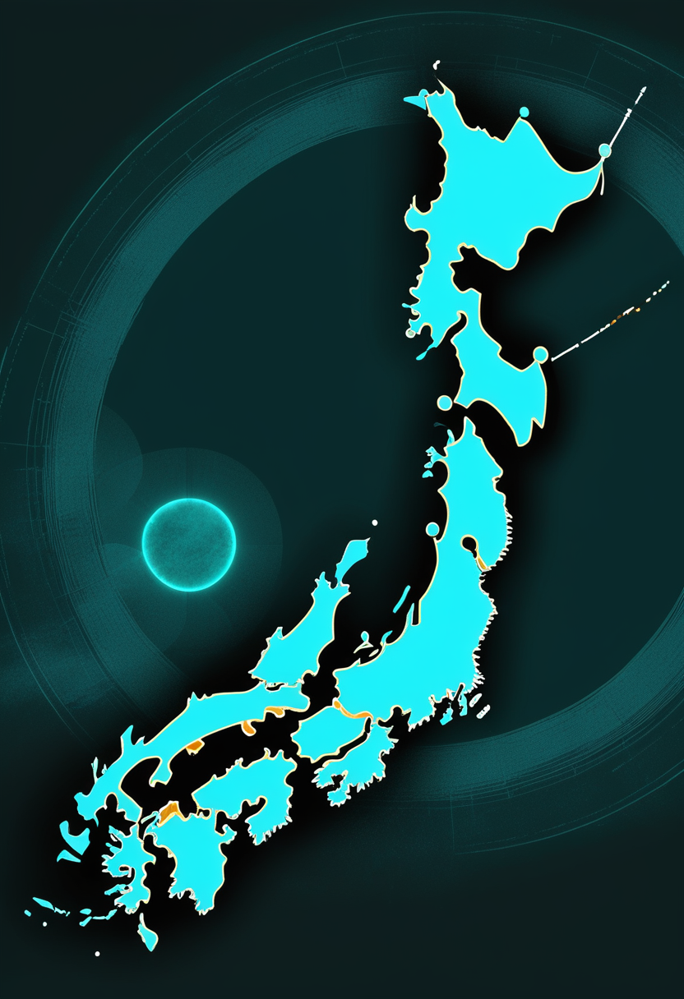
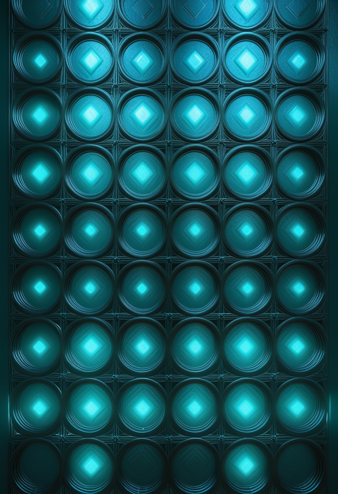
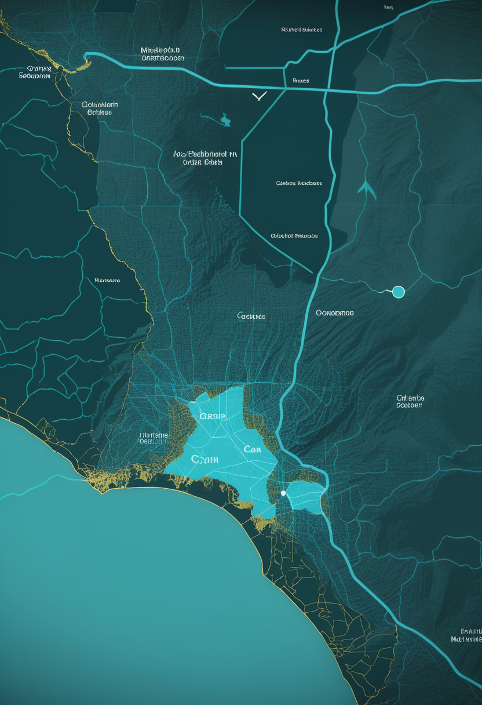

全国の報告数は11.00、学級閉鎖933校。流行はこれから本格化する。

厚生労働省は11/13、第45週(11/2〜11/8)のインフルエンザ発生状況を公表した。全国の定点医療機関1か所あたりの報告数は11.00で、前週の10.26から増加し、第43週から3週連続で増えた。報告数は4万1,071人で前週より7.5%多い。都道府県別では北海道が28.32で最も多く、注意報レベルの目安(10)を超えたのは23道県とされる(報道ベース、厚労省資料の原本は未確認)。北日本・東日本で増加が目立つ一方、西日本や九州・沖縄では減少に転じた自治体もある。学校では休校28校、学年閉鎖364校、学級閉鎖933校が報告された。全体の水準は前年同期の約半分だが、これから本格的な流行期に入る。同日公表の新型コロナの定点当たり報告数は0.76で、減少が続いている。
ISEMBYLD(アピテグロマブ)の9月承認時に得た「小児希少疾患の優先審査バウチャー」(他の薬の審査を早められる権利)について、Scholar Rockは11/9、BioNTechの米国法人と現金2億500万ドルで売る資産購入契約を結んだと11/10のSEC提出書類で明らかにした。契約はハート・スコット・ロディノ法の独占禁止法審査を経て成立する見込み。成立すれば手元資金は9月末時点の4億1,360万ドルに売却額を加えた約6億1,800万ドル超になる。ISEMBYLDは筋肉を狙う初のSMA治療薬として承認され、10月に最初の患者への点滴が始まった。
Scholar Rockが11/10に発表した2026年第3四半期(7〜9月)決算によると、ISEMBYLDの同四半期の製品売上は60万ドルだった。10月の最初の点滴分が中心で、当面は「買い切り型」の請求と暫定的な保険コードに頼る必要があり、正式なJコードの運用開始は2027年4月の見込み。研究開発費5,410万ドル・販売管理費5,250万ドルを含む四半期の純損失は1億720万ドル、現金等は9月末時点で4億1,360万ドル。日本では8/21にPMDAが「日本人患者を対象にした追加の臨床試験は不要」と判断したことを踏まえ、年内の新薬承認申請(JNDA)提出を計画している。欧州は充填工場の変更を経て申請を再提出済みで、CHMPの見解は2027年前半の見込み。
ISEMBYLDは資金と販売の両面で地歩を固めつつある。優先審査バウチャーの売却で手元資金を厚くし、日本でも年内申請という次の節目が見えてきた。

中国の工業情報化部(MIIT)が公表した最新の業界標準計画で、同部のBCI標準化技術委員会が所管する9項目の標準づくりが承認(立項)された。製品の等級・分類、リスク管理、操作画面(インターフェース)などを対象とする。報道では、ある調査機関が国内のBCI市場は2030年に150億元を超える可能性があると予測しているという。これまで伝えてきた「承認→保険→症例数」という積み上げに、ルールの土台が加わる形になる。
上海市科学技術委員会の副主任は「2026脳機接口大会」の記者説明会で、市内にBCI企業が120社以上集まり、3社が相次いで新規株式公開(IPO)の準備に入ったと説明した。深圳の電気街・華強北には「全球脳機接口産業応用示範中心」が開設され、脳波で絵を描くなど、頭を切らない(非侵襲)BCI製品を誰でも体験できるという。前号で伝えた同大会の別の記者会見(国内でBCIの恩恵を受けた患者121例・NEOの保険適用)とは別角度の数字で、企業名や開設日は報道のまとめに基づき要確認。
中国は規格づくりと企業・資本市場の両面で量産・普及の地盤を固めている。視線入力など米欧勢の新しい発表は今号でも確認できなかった。
第45週の全国の定点当たり報告数は11.00(前週10.26)。報告数は4万1,071人(前週3万8,205人)で7.5%増えた。北海道の28.32が最多で、23道県が注意報レベルの目安10を超えたとされる(報道ベース、厚労省資料の原本は未確認)。東日本中心に増え、西日本では減少傾向が見え始めたとの分析もある。新型コロナは0.76で減少が続く。

欧州疾病予防管理センター(ECDC)によると、コンゴ民主共和国(DRC)の確定例は11/11時点で11,114例、死者5,433人(致死率約49%)。米CDCの11/12更新では11/10時点で確定11,145例・死者5,437人とし、疑い例は一時的に集計から外しているとする(機関で集計日・定義が異なる)。流行はイトゥリ州など8州に及び、CDCは「過去のエボラより大幅に速く広がり、記録上2番目の規模」と説明。ウガンダの流行は終息し、ナイジェリアは10/20に初の症例を報告した。原因のブンディブギョ型に承認済みのワクチン・治療薬はなく、第2/3相の治験が進む。
汎米保健機構(PAHO)の専門委員会は11/10〜13に非公開で会合を開き、米国とメキシコの「麻疹排除」の地位を審査した。同じウイルス系統が1年以上続けて広がったかを遺伝子データで判断するもので、結果の公表は来週の予定と報じられている。直前の11/9には、ウィスコンシン州とニューヨーク州でそれぞれ30年以上ぶりとなる麻疹関連の死亡(いずれも乳児)が報告された。米国の2026年の確定例は5,182例で1991年以来最多。CDCのシュワルツ所長は「地位を失っても対策は変わらない」としている。
日本は北から流行が広がる典型的な形。来週の第46週で全国が増え続けるか、北海道が警報レベルの目安(30)に届くかに注目。米国の麻疹は来週にも『排除国』の地位を失う可能性が高い。
1977年に打ち上げられたNASAの探査機ボイジャー1号が、11/18ごろ地球から光で丸1日かかる距離「1光日」(約259億km、約173天文単位)に達する見込み。人工物として初めて。到達時刻は報道で数分の差があり、米東部時間18日午前5時16分ごろ(日本時間18日19時16分ごろ)とする報道が多い。地球から送った指令が届くのに1日、返事が戻るのにさらに1日かかる。観測装置の多くはすでに止まっているが、交信は続いている。双子のボイジャー2号が1光日に届くのは2035年11月の見込み。
ワルシャワ大学、ポーランド軍事工科大学、IBMチューリッヒ研究所、仏CNRSなどのチームは、光と物質が混ざり合った粒子(励起子ポラリトン)を使い、結晶のような規則正しい並びと、摩擦なく流れる性質を同時に持つ「超固体」を室温でつくったとScience Advancesに発表した。液晶を使った微小な光の共振器の中で生まれ、約60℃に近い温度でも動作するという。超固体はこれまで主に極低温の原子で実現されてきたもので、高速な光デバイスやセンサーへの応用が期待される。
腎臓の病気・IgA腎症の成人352人を対象にした第3相試験「I CAN」の中間解析がNEJMに掲載された(オンライン公開は10/23との情報、要確認)。補体という免疫のしくみを抑える点滴薬ラブリズマブ(ユルトミリス)を8週ごとに投与すると、34週時点のたんぱく尿は偽薬に比べ43.4%多く減った。血尿が消えた人も42.4%(偽薬11.1%)と多く、重い有害事象は4.6%(偽薬9%)で死亡はなかった。腎機能(eGFR)への効果は106週の最終解析で判定する。FDAが10/21に迅速承認したとの報道もある(要確認)。
ボイジャー1号の1光日到達は来週火曜の夜(日本時間)。量子では『室温』がキーワードになりつつある。中国科学院は天宮での9.7ピコケルビン(既報)以降、今号で新しい大型発表を確認できず、CERNのLHCは高輝度化の長期停止が続く。
Science誌が11/4に公表した調査で、瞑想・睡眠用の脳波ヘッドバンド「Muse」を作るカナダのInteraxonが、利用者の脳波約5万時間分で「脳の基盤モデル」を学習させていたと同誌に認めた。プライバシー方針にはこの用途が明記されておらず、記者の指摘を受けて更新したという。会社は名前やメールアドレスを除いてから使ったとするが、何人分のデータかは示していない。一度モデルに取り込まれたデータを後から取り除くのはほぼ不可能だと同誌は指摘。脳の基盤モデルを作っていると公表している消費者向け脳波企業は少なくとも9社あった。
韓国国立博物館・モンゴル科学アカデミー・モンゴル国立博物館の共同調査隊が、モンゴル東部ドゥールリグ・ナルス古墳群で全長約73メートルの大型墓を発掘した。遊牧国家・匈奴の墓とみられ、漆塗りの馬車が中心の埋葬の上に置かれ、9層・深さ14メートル超の石で覆われていた。木棺の中からは透明な把手付きガラス容器(ローマ製とみられる)、漢代の祭祀用の玉璧に似るが形や装飾が異なる玉製品15点、朝鮮半島の古墳にも似た例がある瓢箪形の銀製馬具飾り、匈奴の墓から初めて見つかったとされる金の装飾品が出土した。ローマ・朝鮮半島・中国の品が一つの墓に揃うことから、草原の道を介した東西交易の広がりがうかがえる。
脳波データが同意の外でAIの材料になりうるという懸念の一方、2000年前の匈奴の墓からはローマのガラス器が見つかった。人の記録を『残す』営みは、形を変えながら続いている。
今号の軸は『北から迫る増加』だった。日本のインフルエンザは3週連続で増え、エボラの確定例も機関ごとに数字は違えど増え続けている。一方でScholar Rockは資金を厚くし、2000年前のモンゴルの草原からはローマのガラス器が姿を見せた――増える数字の隣で、積み重ねも続いている。
おやすみなさい、また明日。